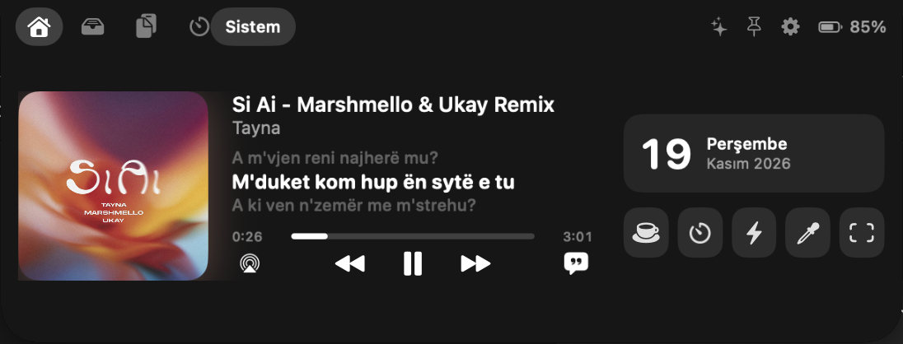
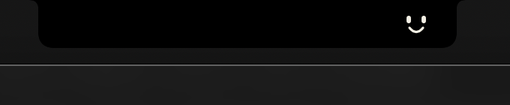

Mate Notch turns the notch into a control surface: music with synced lyrics, calendar, clipboard history, a file shelf, timer, a sleek volume and brightness indicator, and a tiny mascot. Free and open source.
Mate Notch, notch'u bir kontrol yüzeyine çevirir: senkron sözlü müzik, takvim, pano geçmişi, dosya rafı, zamanlayıcı, şık bir ses ve parlaklık göstergesi ve minik bir maskot. Ücretsiz ve açık kaynak.
macOS 14 or later · Apple Silicon & Intel · signed and notarized by Apple macOS 14 veya üstü · Apple Silicon ve Intel · imzalı ve Apple onaylı

Hover to open, move away to close. It lives in the menu bar and takes no space in the Dock.
Üzerine gel, açılsın; çek, kapansın. Menü çubuğunda yaşar, Dock'ta yer kaplamaz.
Apple Music and Spotify controls, artwork colours, and live lyric lines in the closed notch.
Apple Music ve Spotify kontrolleri, kapak renkleri ve kapalı notch'ta canlı söz satırları.
Search, pin, expire automatically. Password-manager copies are never stored.
Ara, sabitle, otomatik sil. Şifre yöneticisi kopyaları asla kaydedilmez.
Drop files on the notch, drag them out later. Quick Look, copy path, send with AirDrop.
Dosyayı notch'a bırak, sonra çıkarıp sürükle. Hızlı Bakış, yolu kopyala, AirDrop ile gönder.
A sleek indicator in the notch instead of macOS's square. Choose style, size, colour and key step.
macOS'un karesi yerine notch'ta şık bir gösterge. Stil, boyut, renk ve tuş adımı ayarlanır.
Summarize, rewrite, translate. Runs on Apple's on-device model by default; or bring your own Claude, ChatGPT or Gemini key.
Özetle, yeniden yaz, çevir. Varsayılan olarak Apple'ın cihaz içi modeliyle çalışır; istersen kendi Claude, ChatGPT veya Gemini anahtarını bağla.
Next event on Home, a Join button and an alert before meetings, a built-in focus timer.
Ana Sayfa'da sıradaki etkinlik, toplantılar için Katıl düğmesi ve uyarı, yerleşik odak zamanlayıcısı.
Mac, headphones, mouse and keyboard batteries with a two-stage low-battery alert.
Mac, kulaklık, fare ve klavye pilleri; iki aşamalı düşük pil uyarısı.
A moon icon while Focus is on, weather for your chosen city, download progress. No location access.
Odak açıkken ay simgesi, seçtiğin şehrin hava durumu, indirme ilerlemesi. Konum erişimi yok.
Lists caches and logs with what they belong to. Nothing is deleted without your approval.
Önbellek ve günlükleri neye ait olduklarıyla listeler. Onayın olmadan hiçbir şey silinmez.

A little friend on the right wing of the closed notch. It grabs what you copy, waves, keeps the beat with your music, gets tired when the battery is low, puts on headphones and reacts to meetings, downloads and Focus.
Kapalı notch'un sağ kanadında küçük bir arkadaş. Kopyaladığını uzanıp alır, el sallar, müzikle ritim tutar, pil azalınca yorulur, kulaklık takar; toplantı, indirme ve Odak olaylarına tepki verir.
Optional, and every behaviour can be switched off separately.
İsteğe bağlı; her davranış ayrı ayrı kapatılabilir.
No extra step on first launch: the app is signed with a Developer ID and notarized by Apple.
İlk açılışta ek adım yok: uygulama Developer ID ile imzalı ve Apple tarafından onaylı.
brew tap farukzbek/tap brew install --cask mate-notch
Updates itself afterwards, or run brew upgrade --cask mate-notch.
Sonra kendini günceller; elle için brew upgrade --cask mate-notch.
Also available in:Şu dillerde de:
Türkçe·English·Deutsch·Español·Français·Português (Brasil)
The app itself speaks all six languages.Uygulamanın kendisi de bu altı dili konuşur.